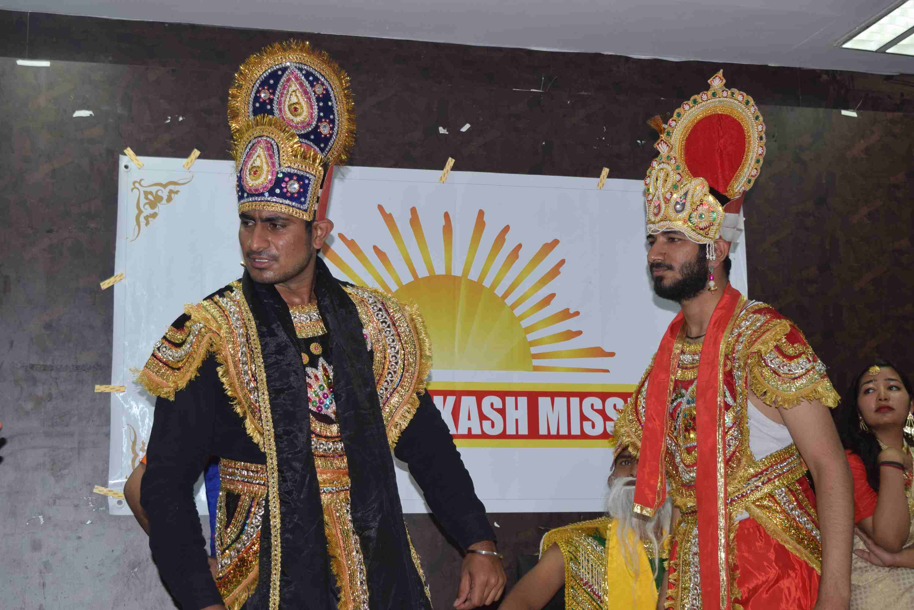
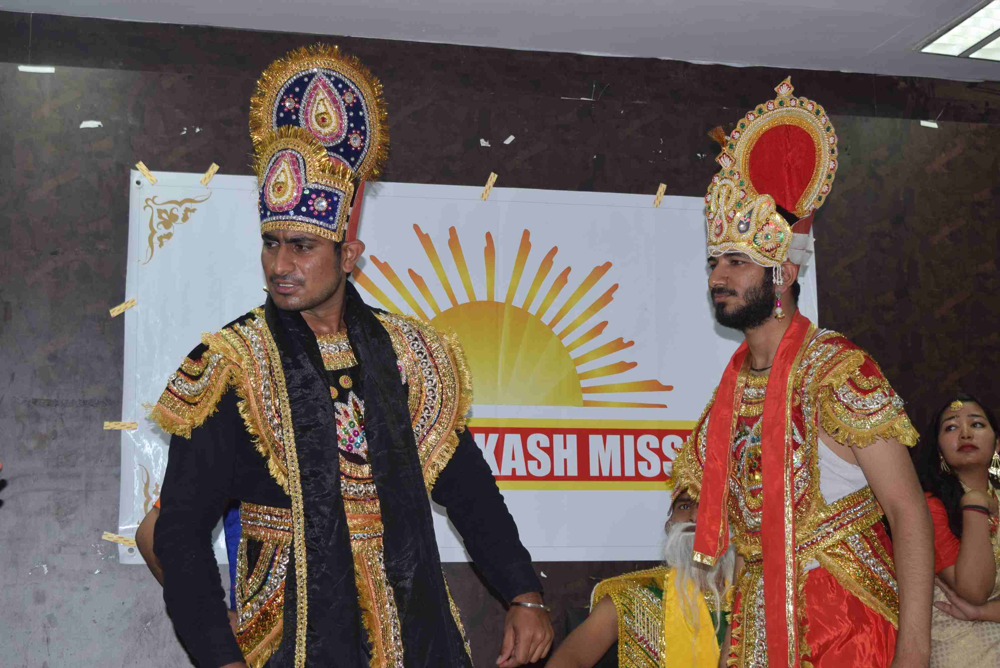

University Clutural And technical Fest
Elements Culmyca, the annual inter-college cul-tech festival of JC Bose University of Science and Technology, YMCA has grown on to become one of the most popular college festivals of NCR with 1000+ participating students, 40+ participating colleges and an expected footfall of over 10000 which tends to increase each year.


 
